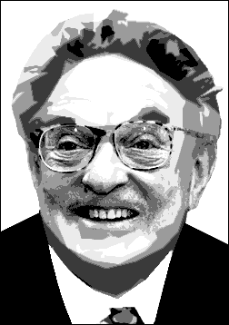

[Review of this article below]
The billionaire trader has become eastern Europe's uncrowned king and the prophet of ''the open society''. But open to what? George Soros profiled by Neil Clark

George Soros is angry. In common with 90 per cent of the world's population, the Man Who Broke the Bank of England has had enough of President Bush and his foreign policy. In a recent article in the Financial Times, Soros condemned the Bush administration's policies on Iraq as "fundamentally wrong"—based as they were on a "false ideology that US might gave it the right to impose its will on the world".
Wow! Has one of the world's richest men—the archetypal amoral capitalist who made billions out of the Far Eastern currency crash of 1997 and who last year was fined $2m for insider trading by a court in France—seen the light in his old age? (He is 72.) Should we pop the champagne corks and toast his conversion?
Not before asking what really motivates him. Soros likes to portray himself as an outsider, an independent-minded Hungarian emigre and philosopher-pundit who stands detached from the US military-industrial complex. But take a look at the board members of the NGOs he organises and finances. At Human Rights Watch, for example, there is Morton Abramowitz, US assistant secretary of state for intelligence and research from 1985-89, and now a fellow at the interventionist Council on Foreign Relations; ex-ambassador Warren Zimmerman (whose spell in Yugoslavia coincided with the break-up of that country); and Paul Goble, director of communications at the CIA-created Radio Free Europe/Radio Liberty (which Soros also funds). Soros's International Crisis Group boasts such "independent" luminaries as the former national security advisers Zbigniew Brzezinski and Richard Allen, as well as General Wesley Clark, once Nato supreme allied commander for Europe. The group's vice-chairman is the former congressman Stephen Solarz, once described as "the Israel lobby's chief legislative tactician on Capitol Hill" and a signatory, along with the likes of Richard Perle and Paul Wolfowitz, to a notorious letter to President Clinton in 1998 calling for a "comprehensive political and military strategy for bringing down Saddam and his regime".
Take a look also at Soros's business partners. At the Carlyle Group, where he has invested more than $100m, they include the former secretary of state James Baker and the erstwhile defence secretary Frank Carlucci, George Bush Sr and, until recently, the estranged relatives of Osama Bin Laden. Carlyle, one of the world's largest private equity funds, makes most of its money from its work as a defence contractor.
Soros may not, as some have suggested, be a fully paid-up CIA agent. But that his companies and NGOs are closely wrapped up in US expansionism cannot seriously be doubted.
So why is he so upset with Bush? The answer is simple. Soros is angry not with Bush's aims—of extending Pax Americana and making the world safe for global capitalists like himself—but with the crass and blundering way Bush is going about it. By making US ambitions so clear, the Bush gang has committed the cardinal sin of giving the game away. For years, Soros and his NGOs have gone about their work extending the boundaries of the "free world" so skilfully that hardly anyone noticed. Now a Texan redneck and a gang of overzealous neo-cons have blown it.
As a cultivated and educated man (a degree in philosophy from the London School of Economics, honorary degrees from the Universities of Oxford, Yale, Bologna and Budapest), Soros knows too well that empires perish when they overstep the mark and provoke the formation of counter-alliances. He understands that the Clintonian approach of multilateralism—whereby the US cajoles or bribes but never does anything so crude as to threaten—is the only one that will allow the empire to endure. Bush's policies have led to a divided Europe, Nato in disarray, the genesis of a new Franco-German-Russian alliance and the first meaningful steps towards Arab unity since Nasser.
Soros knows a better way—armed with a few billion dollars, a handful of NGOs and a nod and a wink from the US State Department, it is perfectly possible to topple foreign governments that are bad for business, seize a country's assets, and even to get thanked for your benevolence afterwards. Soros has done it.
The conventional view, shared by many on the left, is that socialism collapsed in eastern Europe because of its systemic weaknesses and the political elite's failure to build popular support. That may be partly true, but Soros's role was crucial. From 1979, he distributed $3m a year to dissidents including Poland's Solidarity movement, Charter 77 in Czechoslovakia and Andrei Sakharov in the Soviet Union. In 1984, he founded his first Open Society Institute in Hungary and pumped millions of dollars into opposition movements and independent media. Ostensibly aimed at building up a "civil society", these initiatives were designed to weaken the existing political structures and pave the way for eastern Europe's eventual colonisation by global capital. Soros now claims, with characteristic immodesty, that he was responsible for the "Americanisation" of eastern Europe.
The Yugoslavs remained stubbornly resistant and repeatedly returned Slobodan Milosevic's unreformed Socialist Party to government. Soros was equal to the challenge. From 1991, his Open Society Institute channelled more than $100m to the coffers of the anti-Milosevic opposition, funding political parties, publishing houses and "independent" media such as Radio B92, the plucky little student radio station of western mythology which was in reality bankrolled by one of the world's richest men on behalf of the world's most powerful nation. With Slobo finally toppled in 2000 in a coup d'etat financed, planned and executed in Washington, all that was left was to cart the ex- Yugoslav leader to the Hague tribunal, co-financed by Soros along with those other custodians of human rights Time Warner Corporation and Disney. He faced charges of crimes against humanity, war crimes and genocide, based in the main on the largely anecdotal evidence of (you've guessed it) Human Rights Watch.
Soros stresses his belief in the "open society" propounded by the philosopher Karl Popper, who taught him at the LSE in the early 1950s. Soros's definition of an "open society"—"an imperfect society that holds itself open to improvement"—sounds reasonable enough; few lovers of genuine liberty would take issue with its central tenet that "the open society is a more sophisticated form of social organisation than a totalitarian one". But Soros's "open societies" don't tend to be all that open in practice.
Since the fall of Milosevic, Serbia, under the auspices of Soros-backed "reformers", has become less, not more, free. The recently lifted state of emergency saw more than 4,000 people arrested, many of them without charge, political parties threatened with bans, and critical newspapers closed down. It was condemned by the UN Commission on Human Rights and the British Helsinki Group. But there was not a murmur from the Open Society Institute or from Soros himself. In fairness, Soros has been far more critical of his former protégé Leonid Kuchma, president of the Ukraine, a country described by the former intelligence officer Mykola Melnychenko as "one big protection racket", and now possibly the most repressive police state in Europe.
But generally the sad conclusion is that for all his liberal quoting of Popper, Soros deems a society "open" not if it respects human rights and basic freedoms, but if it is "open" for him and his associates to make money. And, indeed, Soros has made money in every country he has helped to prise "open". In Kosovo, for example, he has invested $50m in an attempt to gain control of the Trepca mine complex, where there are vast reserves of gold, silver, lead and other minerals estimated to be worth in the region of $5bn. He thus copied a pattern he has deployed to great effect over the whole of eastern Europe: of advocating "shock therapy" and "economic reform", then swooping in with his associates to buy valuable state assets at knock-down prices.
More than a decade after the fall of the Berlin Wall, Soros is the uncrowned king of eastern Europe. His Central European University, with campuses in Budapest, Warsaw and Prague and exchange programmes in the US, unashamedly propagates the ethos of neoliberal capitalism and clones the next pro-American generation of political leaders in the region. With his financial stranglehold over political parties, business, educational institutions and the arts, criticism of Soros in mainstream eastern European media is hard to find. Hagiography is not. The Budapest Sun reported in February how he had been made an honorary citizen of Budapest by the mayor, Gabor Demszky. "Few people have done to Budapest what George Soros has," gushed Demszky, saying that the billionaire had contributed to "structural and mental changes in the capital city and Hungary itself". The mayor failed to add that Soros is also a benefactor of Demszky's own party, the Free Democrats, which, governing with "reform" communists, has pursued the classic Soros agenda of privatisation and economic liberalisation—leading to a widening gap between rich and poor.
The Soros strategy for extending Pax Americana differs from the Bush model, particularly in its subtlety. But it is just as ambitious and just as deadly. Left- liberals, admiring his support for some of their favourite issues such as gay rights and the legalisation of soft drugs, let him off lightly.
Asked about the havoc his currency speculation caused to Far Eastern economies in the crash of 1997, Soros replied: "As a market participant, I don't need to be concerned with the consequences of my actions." Strange words from a man who likes to be regarded as the saviour of civil society and who rails in print against "market fundamentalism".
source: http://www.mail-archive.com/marxism@lists.panix.com/msg45266.html 3jun03
George Soros, is known as a Hungarian émigré philanthropist, a proponent of human rights and the “open society,” and, just incidentally, a financier—one of the richest men in the world. Soros recently criticized George W. Bush saying in an article in the Financial Times of London that his administration’s Iraq policies were “fundamentally wrong” and that they are premised on the “false ideology that U.S. might gave it the right to impose its will on the world.” Many of us in the peace movement would say: “he got that right!” We might be inclined to praise him and to believe that this confirms that he really is a “do-gooder”—an image, by the way, that he carefully cultivates, especially through various NGOs. In fact numerous non-profit organizations have received funds from his foundation because they have bought into that perception.
But let’s take a closer look to see what is motivating Soros. Neil Clark, writing in an incisive article the New Statesman (June 2, 2003), points out that Soros “made billions out of the Eastern currency crash of 1997,” and that he was fined last year “for insider trading by a court in France.” In fact currency speculation is his modus operandi and if this contradicts his pronouncements against “market fundamentalism” and in favor of “civil society, ” well, so be it. In fact, Clark reported that when queried about the turmoil his speculation caused to Far Eastern economies in 1997, Soros replied: “As a market participant, I don’t need to be concerned with the consequences of my actions.”
But all of this is just the tip of the iceberg. What of the NGOs Soros established and finances? Who are the other leaders of these groups? Clark informs us that at Human Rights Watch, for example, there is Morton Abramowitz, U.S. assistant secretary of state for intelligence and research from 1985-1989` and now a fellow at the Council on Foreign Relations; Warren Zimmerman former ambassador “whose spell in Yugoslavia coincided with the break up of that country”; and Paul Goble, director of communications “at the CIA-created Radio Free Europe/Radio Liberty (which Soros also funds).”
According to Clark, Soros’ International Crisis Group “boasts such ‘independent’ luminaries as the former national security advisers Zbigniew Brzezinki and Richard Allen, as well as General Wesley Clark, once NATO supreme allied commander for Europe. The group’s vice-chairman is the former congressman Stephen Solarz, once described as ‘the Israel lobby’s chief legislative tactician on Capitol Hill’ and a signatory, along with the likes of Richard Perle and Paul Wolfowitz, to a notorious letter to President Clinton in 1998 calling for a ‘comprehensive political and military strategy for brining down Saddam and his regime’.”
So much for Soros’ opposition to Bush’s Iraq policies.
There’s more! Who are Soros’s business partners at the Carlyle Group---one of the world’s largest private equity funds, which makes most of this profit from defense contracts? They include the former secretary of state James Baker and Frank Carlucci, former defense secretary, George Bush, Sr, and “until recently, the estranged relatives of Osama Bin Laden.” Soros has invested more than $100 million in Carlyle, Clark tells us.
He also points out that “Soros may not, as sometimes suggested, be a fully paid-up CIA agent. But that his corporations and NGOS are closely wrapped up in U.S. expansionism cannot seriously be doubted.”
This brings us back to the question; “why has Soros lambasted Bush?” The answer lies in understanding that, more than ever, within the Wall Street power elite there may be differences in tactics but seldom are there significant differences in the end goal---opening the way for the maximization of corporate profits everywhere around the world. Today, there is basically a oneness of purpose in promoting U.S. imperial dominance, and in the process, attempting to solve a deepening global economic crisis by controlling diminishing petroleum and energy resources.
How does this play out where Soros is concerned? As Clark points out, “Soros is angry not at Bush’s aims---of expanding Pax Americana and making the world safe for global capitalists like himself—but with the crass and blundering way Bush is going about it. By making U.S. ambitions so clear, the Bush gang has committed the cardinal sin of giving the game away. For years, Soros and his NGOs have gone about their work extending the boundaries of the ‘free world’ so skillfully that hardly anyone noticed. Now a Texan redneck and a gang of overzealous neo-cons have blown it”
Soros’ way is to use a few billion dollars, some NGOs and a “nod and wink from the U.S. State department” to bring down foreign governments that are “bad for business” to seize a nation’s assets, and even get thanked for your ‘benevolence,’” according to Clark. This method has worked for Soros and his cohorts.
Take the collapse of the Soviet Union, for example. Clark points out that “Soros’ role was crucial: “From 1979, he distributed $3 million a year to dissidents including Poland’s solidarity movement, Charter 77 in Czechoslovakia and Andrei Sakharov in the Soviet Union. In 1984, he founded his first Open Society Institute in Hungary and pumped millions of dollars into opposition movements and independent media. Ostensibly aimed at building up a ‘civil society”, these initiatives were designed to weaken the existing political structures and pave the way for eastern Europe’s eventual exploitation by global capital. Soros now claims with characteristic immodesty, that he was responsible for the “Americanization” of eastern Europe.”
More recently, there is the case of Yugoslavia. As Clark puts it:
“TheYugoslavs remained stubbornly resistant and repeatedly returned Slobodan Milosevic’s reformed Socialist Party to government. Soros was equal to the challenge. From 1991, his Open Society Institute channeled more than $100 million to the coffers of the anti-Milosevic opposition, funding political parties, publishing houses and “independent” media such as Radio B92, the plucky little student radio station of western mythology, which was in reality bankrolled b one of the world’s richest men on behalf of the world’s most powerful nation. With Slobo finally toppled in 2000 in a coup d’etat financed, planned and executed in Washington all that was left was to cart the ex Yugoslav leader to the Hague tribunal, co-financed by Soros along with other custodians of human rights, Time Warner Corporation and Disney. He faced charges of crimes against humanity, war crimes and genocide, based in the main on the largely anecdotal evidence of (you guessed it) Human Rights Watch.”
Clark points out that “since the fall of Milosevic, Serbia, under the auspices of Soros- backed “reformers”, has become less, not more, free. The recently lifted state of emergency saw more than 4,000 people arrested, many of them without charge, political parties threatened with bans, and critical newspapers closed down” This has been so blatant that it was condemned by the UN Commission on Human Rights and the British Helsinki Group
“Soros has made money in every country he has helped to prise ‘open’. In Kosovo, for example, he has invested $50 million in an attempt to gain control of the Trepca mine complex, where there are vast reserves of gold, silver, lead and other minerals estimated to be worth in the region of $5 billion. He thus copied a pattern he has deployed to great effect over the whole of eastern Europe of advocating ‘shocking therapy’ and ‘economic reform’, then swooping in with his associate to buy valuable state assets at knock-down prices,” according to Clark.*
In Hungary, Soros is the benefactor of the Free Democrats party “which has pursued the classic Soros agenda of privatization and economic liberalization---leading to a widening gap between rich and poor,” says Clark.
“The Soros strategy for extending Pax Americana differs from the Bush model, particularly in its subtlety. But it is just as ambitious and just as deadly,” Clark concludes.
Of course, in the case of Yugoslavia, ultimately the Soros approach was not enough so the overwhelming might of the U.S. military was brought into play.*
For background information on the former Yugoslavia, see “The Real Reasons for the War in Yugoslavia: Backing up Globalization with Military Might,” by Karen Talbot, http://icpj.org/military_build.html
source: http://www.globalresearch.ca/articles/TAL307A.html 3jul03
|
If
you have come to this page from an outside location click
here to get back to mindfully.org |